AI로 빨리 만든 문장이 왜 위험 신호일까요?
AI(Artificial Intelligence) 도구로 서비스 하나를 혼자 끝까지 만들고, 공고의 필수 기술 스택도 다 채웠는데 서류에서 계속 떨어지는 경우가 있어요. 발표자는 코딩 실력 문제가 아니라고 해요. 지원자는 압도적인 생산성을 적었다고 생각하지만, 채용팀은 같은 문장을 가장 꺼리는 위험 신호로 읽는다는 거예요.
영상이 예로 드는 문장은 두 가지예요. 'Cursor와 Claude를 활용해 개발 일정 50% 단축', 그리고 '기획부터 결제·배포까지 1인 풀스택 MVP 2주 만에 완성'이에요. 화면 오른쪽 위 스티커가 바로 그 두 번째 문장을 줄여 놓은 거예요.
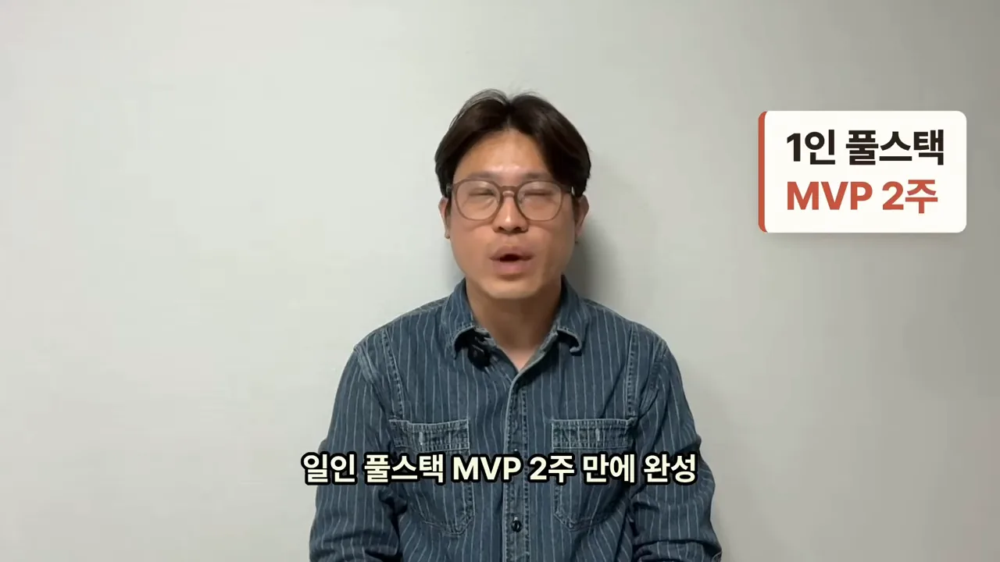
면접관이 이 문장에서 떠올리는 건 감탄이 아니라 걱정이에요. 혼자 2주 만에 결제까지 붙였다면 운영 중 예외가 터졌을 때 누가 수습하는지, 복사·붙여넣기로 만든 시한폭탄은 아닌지부터 따져요.
발표자는 지금 채용이 'AI로 얼마나 빨리 만들었나'를 보는 자리가 아니라고 해요. AI가 쏟아낸 코드 뒤에서 진짜 실력을 증명할 수 있는지를 가리는 시험장에 가깝다는 거예요. 그래서 이 장 끝에 띄우는 슬라이드가 영상 전체의 결론이에요. 큰 글씨로 '책임·판단·성과', 그 아래 작은 글씨로 '도구의 속도가 아니라'라고 적혀 있어요.
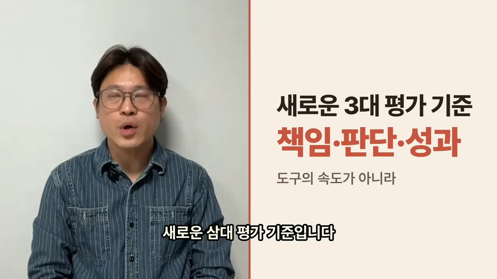
면접관의 질문 하나와 3대 평가 기준
AI 도움으로 2주 만에 만든 사이드 프로젝트에 React, Next.js, Docker, AWS(Amazon Web Services)를 빽빽하게 적은 이력서는 겉보기엔 시니어급이에요. 그런데 실무 질문 하나면 밑천이 드러난다고 해요.
결제 버튼을 연속으로 빠르게 눌렀을 때 돈이 두 번 빠져나가지 않도록 어떻게 막으셨나요?
— 영상 02:14
대부분은 '결제 요청이 들어가면 버튼을 비활성화해서 중복 클릭을 막았다'고 답해요. 지원자는 예외 처리를 했다고 생각하지만, 면접관은 여기서 오히려 서늘해진다고 해요. 아래 슬라이드가 그 이유예요. 왼쪽부터 '버튼 연타·새로고침' → '네트워크 지연' → '결제가 두 번 승인'으로 이어지고, 마지막 칸만 진하게 강조돼 있어요.
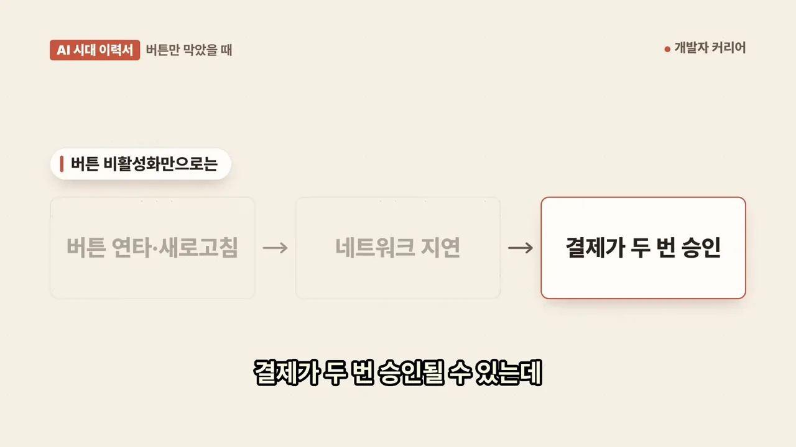
버튼만 막았다는 답은 AI가 짜 준 기본 예제를 그대로 썼고, 서버에서 돈을 지키는 방어 로직은 생각하지 못했다는 신호로 읽혀요. 발표자는 LLM(Large Language Model)이 만든 코드의 40% 이상에서 이런 경계 조건과 서버 예외 누락이 생긴다는 통계도 들어요.
그래서 '2주 만에 혼자 구축'을 본 면접관이 느끼는 건 감탄이 아니에요. 오른쪽 패널의 빨간 글씨처럼 '장애 불안'이에요. 프로덕션에서 장애가 나면 이 사람은 수습하지 못하겠다는 걱정이죠.
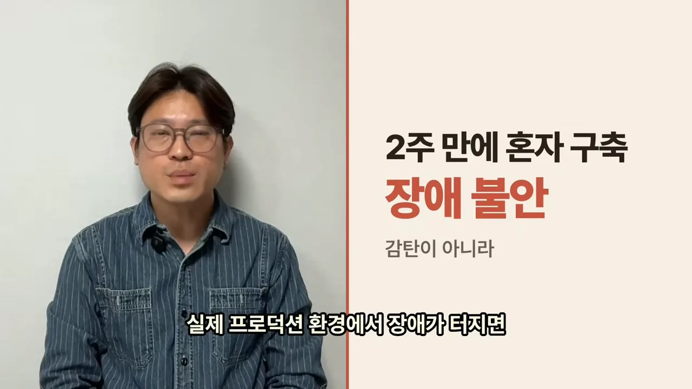
채용팀의 3대 평가 기준
발표자가 말로 풀어 준 세 기준을 한 그림으로 모았어요. 기준마다 이력서가 답해야 할 질문이 하나씩 붙어 있어요. 마지막 장의 3단 템플릿도 이 세 칸 그대로예요.
왜 하필 이 셋일까요? 발표자는 예전엔 손으로 코드를 쳐서 기능을 완성하는 데 개발 공수의 70%가 들었다고 해요. 지금은 타이핑이 몇 초면 끝나니, 가치가 다른 곳으로 옮겨 갔다는 거예요. 슬라이드는 그 두 곳을 '책임감·판단력'으로 적고, 'AI가 짠 코드 뒤에서'라는 말을 붙였어요.
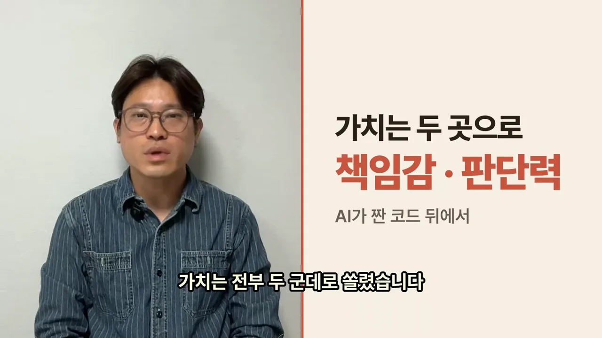
같은 5일, 다른 두 지원자
같은 5일 동안 결제 기능을 만든 두 지원자를 비교해요. 슬라이드 왼쪽 A 카드는 흐리게, 오른쪽 B 카드는 초록 테두리로 강조돼 있어요.
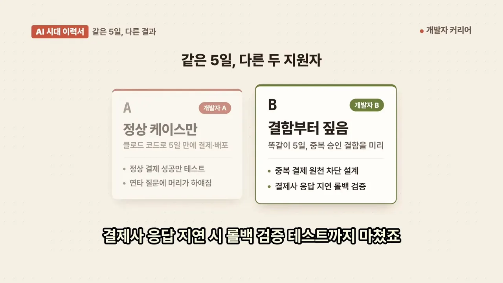
| 개발자 A · 정상 케이스만 | 개발자 B · 결함부터 짚음 | |
|---|---|---|
| 만든 방식 | Claude Code로 5일 만에 결제 기능을 붙이고 배포 | 똑같이 5일, 결제 승인 과정의 중복 승인 결함을 미리 짚음 |
| 테스트 | 정상 결제 성공 케이스만 | 중복 결제 원천 차단 설계, 결제사 응답 지연 시 롤백 검증 |
| 연타 질문을 받으면 | 머리가 하얘져요 | 설계와 테스트로 답해요 |
| 장애가 나면 | 수습하기 어려워요 | 운영 환경에서 끝까지 수습할 수 있어요 |
빠른 출시가 더 중요할 때는?
스타트업은 일주일 만에 기능을 내보내고 반응을 보는 게 더 중요할 때가 많아요. 발표자도 인정해요. 내부 관리자 도구나 초기 MVP(Minimum Viable Product)라면 A의 방식이 훨씬 경제적일 수 있다고요. 다만 그럴 때도 '빠르게 만들었다'고만 쓰면 안 된다고 해요.
슬라이드의 제목이 핵심이에요. '속도를 택했다는 것도 판단이다.' 왼쪽 흐린 카드의 'AI로 빠르게 만들었다'는 판단이 안 보이는 문장이고, 오른쪽 카드가 '속도와 품질의 트레이드오프'를 드러낸 합격 문장이에요.
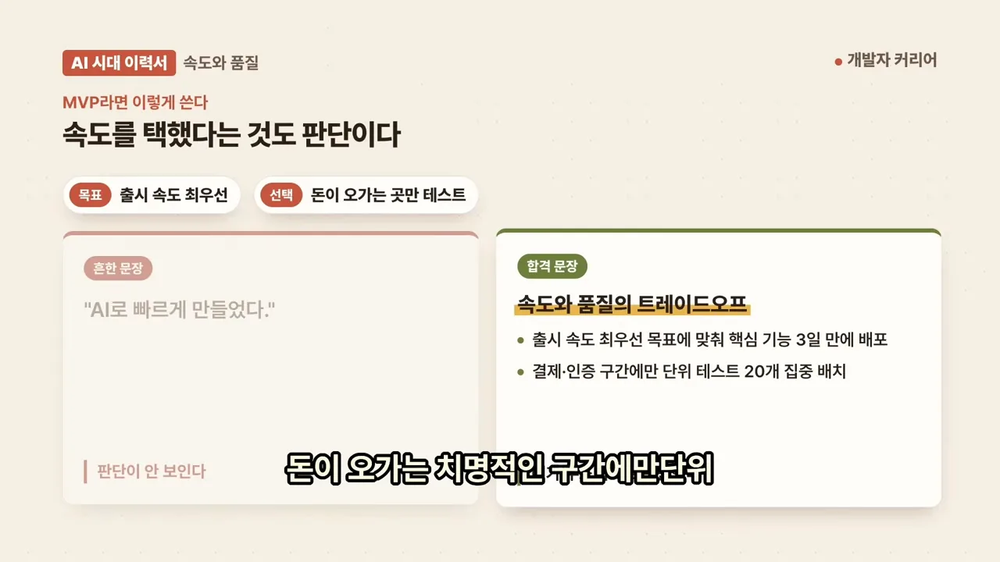
출시 속도가 최우선인 비즈니스 목표에 맞춰서 AI로 핵심 기능을 3일 만에 배포하되 결제와 인증처럼 돈이 오가는 치명적인 구간에만 단위 테스트 20개를 집중 배치함.
— 영상 05:35
완벽하게 만들었다고 쓰는 게 아니에요. 비즈니스 상황에 맞춰 어디에 품질을 쏟을지 내가 정했다는 걸 보여 주는 문장이에요.
신입·주니어·시니어 합격 사다리
발표자는 몇 년 동안 개발자 이력서를 첨삭해 왔다고 해요. 2~3년 전에는 '어떤 기술로 무슨 기능을 구현했다'고 성실하게 나열만 해도 붙던 사람들이, 지금은 서류에서 1초 만에 떨어지는 걸 가까이서 봤다고 해요. 오른쪽 패널의 '서류 1초 컷'과 그 아래 '2~3년 전엔 통했던 방식'이 그 이야기예요.
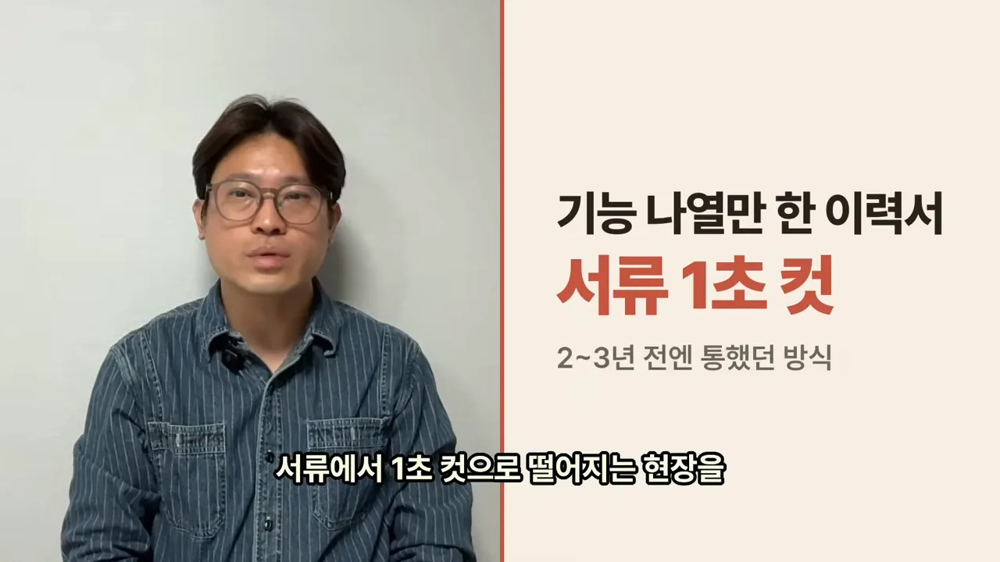
그래서 발표자는 연차별로 증명할 것을 사다리 세 칸으로 나눠요. 슬라이드의 세 점 아래에 신입은 '엣지 케이스 검증', 주니어는 '1인 피처 완결', 시니어는 '단순함의 설계력'이라고 적혀 있어요.
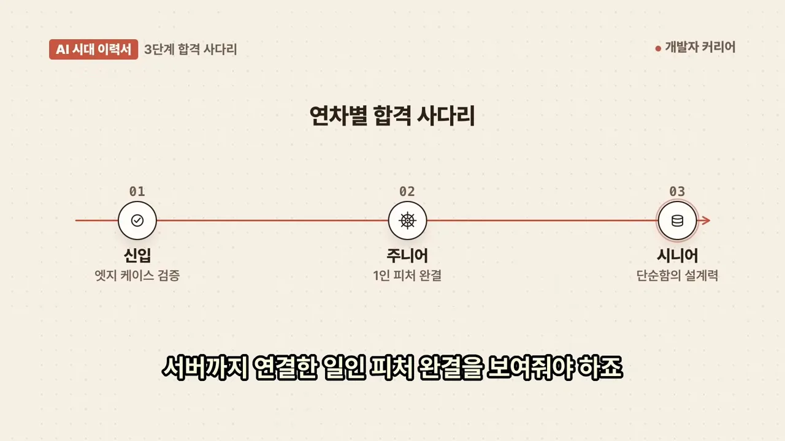
각 칸에 왜 그 기준이 붙는지 발표자의 설명을 표로 옮겼어요.
| 단계 | 증명할 것 | 왜 그런가요 |
|---|---|---|
| 신입 | 엣지 케이스 검증 (책임) | 과거 업무 데이터가 없는데 'AI로 생산성 50% 향상'이라고 쓰면 지어낸 숫자로 보여요. 기대하는 건 비즈니스 임팩트가 아니라, 작은 결함을 끝까지 물고 늘어진 엔지니어링 근거예요 |
| 주니어 | 서버까지 연결한 1인 피처 완결 (판단) | AI 도구 덕에 프론트 개발자도 백엔드 API(Application Programming Interface)를 짜고 인프라를 올릴 수 있게 됐어요. '제 담당이 아니라서 몰라요' 대신 피처 하나를 혼자 끝내는 사람을 원해요 |
| 시니어 | 복잡도를 억누른 단순함의 설계 (성과) | AI가 복잡한 코드를 3일 만에 찍어 내니 코드 생산은 더 이상 희소하지 않아요. 잘못된 아키텍처 결정으로 팀이 떠안을 운영 비용을 막는 게 시니어의 몸값이에요 |
발표자는 신입과 주니어의 가장 큰 함정을 '구현할 수 있는 범위'와 '이해하는 범위'가 크게 벌어진 거라고 짚어요. AI로 복잡한 코드는 만들었는데 동작 원리와 예외 흐름을 모른다면 겉핥기라는 거예요. 반대로 진짜 시니어는 기술적 절제력을 보여요. 화려한 기술로 시스템을 꼬지 않고, 단순함을 지켜 운영 위험을 줄여요.
결제 버튼 중복 클릭 버그 하나로 비교하기
같은 버그 하나를 두고 연차별로 문장이 어떻게 달라지는지 보여 줘요. 세 슬라이드 모두 구성이 같아요. 위쪽 빨간 태그 세 개가 책임·판단·성과 요약이고, 왼쪽 흐린 카드가 기존 문장, 오른쪽 카드가 합격 문장이에요.
신입 — 예외를 물고 늘어진 집요함. 태그는 '연타 시 중복 승인 발견', '외부 모듈 대신 직접 제어', '중복 요청 0건 검증'이에요. 기존 문장은 'AI 도구를 활용해 결제 기능 구현 완료'예요.
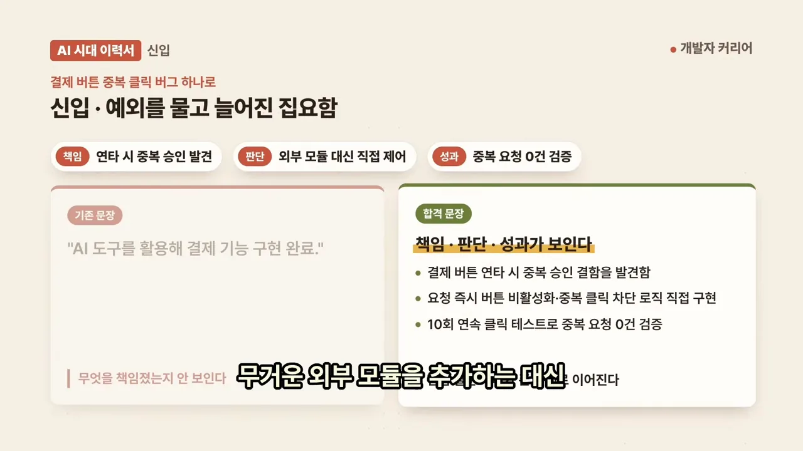
신입 문장의 해결책은 '요청 즉시 버튼 비활성화'예요. 앞 장에서 면접관이 부족하다고 본 답과 같은 방법이지만, 여기선 결함을 스스로 발견하고 10회 연속 클릭 테스트로 검증했다는 점이 더해졌어요.
주니어 — 경계를 허문 1인 피처 완결. 태그는 '지연 시 중복 결제 위험', 'API·DB 차단까지 직접', '장애율 0%·3일 단축'이에요. 기존 문장은 '주문 결제 화면 UI 개발 및 반응형 최적화'예요.
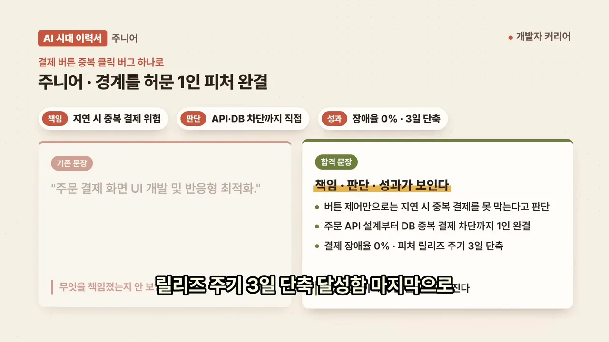
시니어 — 복잡도를 막아 낸 절제. 태그는 'AI 분산 서버 초안 검토', '팀 규모엔 과하다', '운영 비용 40% 절감'이에요. 기존 문장은 '대규모 결제 시스템 분산 아키텍처 설계'예요.
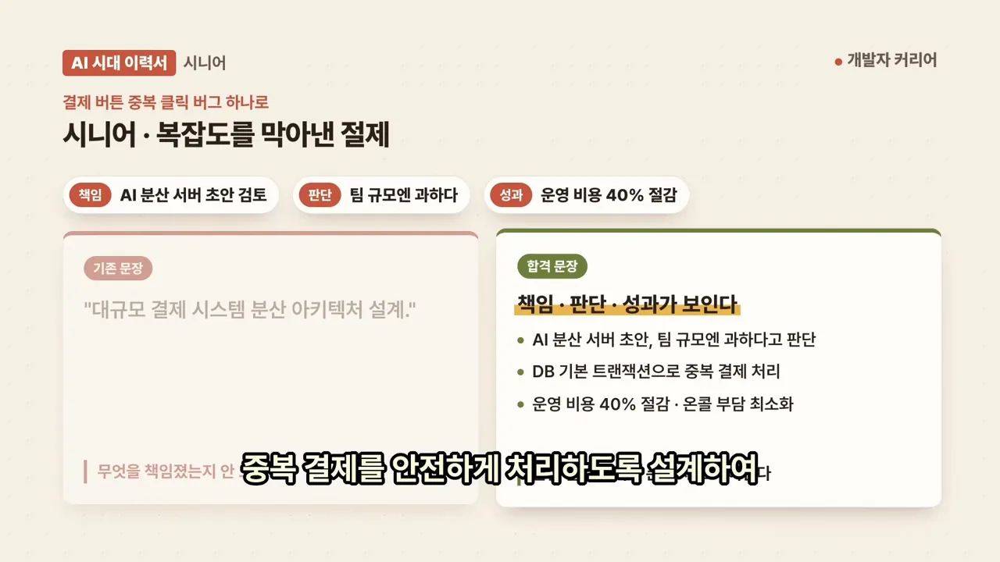
시니어 합격 문장의 '40% 절감'은 초기 인프라 견적과 비교한 운영 비용이에요. 구조가 단순하니 장애가 났을 때 밤중에 불려 나가는 온콜 부담도 줄었다는 게 마지막 성과예요.
기회도, 팀 프로젝트도 없다면
현실적인 질문 두 개가 이어져요. 주니어인데 사내 역할 분담 때문에 담당 밖의 백엔드나 인프라를 만질 기회가 없다면, 그리고 신입인데 팀 프로젝트 없이 개인 토이 프로젝트뿐이라면 어떻게 하냐는 거예요.
주니어에게는 오른쪽 패널의 '서브 프로덕트'를 권해요. 그 아래 작은 글씨 '어드민 툴·자동화·QA봇 1인 완결'이 예시예요. 팀의 병목을 푸는 작은 도구를 기획부터 배포까지 혼자 끝내 보라는 거예요.
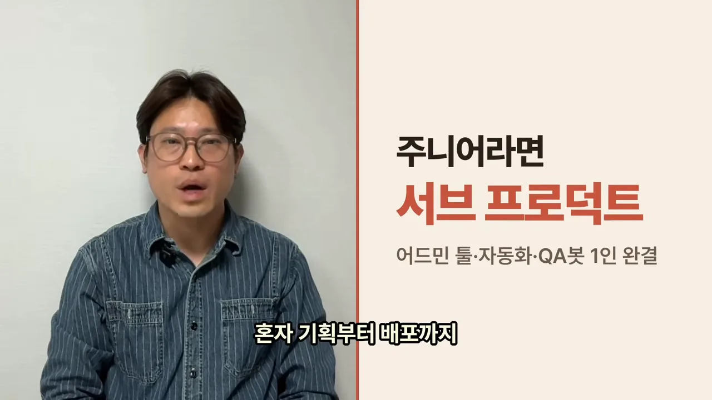
신입에게는 토이 프로젝트에서 예외 세 가지를 일부러 터뜨리고 수습해 보라고 해요. 네트워크 단절, 특수 문자 입력, 중복 연타예요. 그 수습 과정을 GitHub PR(Pull Request) 링크로 이력서에 붙이면 면접관에게 가장 강한 실력 증거가 된다고 해요.
이력서 한 장으로 대기업과 스타트업 모두
여기서 고민이 하나 생겨요. 대기업은 여전히 CS(Computer Science) 기본기를 깐깐하게 보고, 스타트업은 AI를 잘 쓰는 사람을 원하니 이력서를 두 개로 나눠야 하냐는 거예요. 오른쪽 패널의 '많은 지원자가 진을 빼는 고민'이 그 이야기예요.
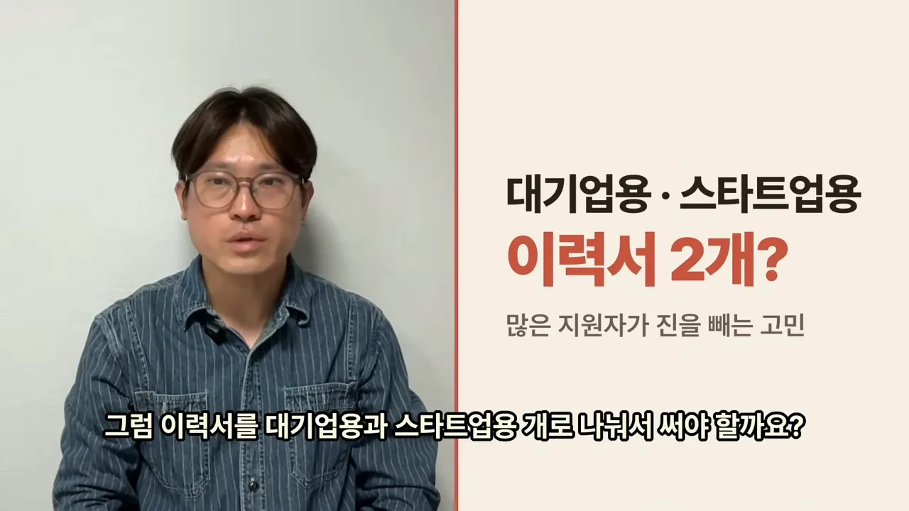
기술적 신뢰를 바닥에 깔고, 그 위에 AI 검증력을 얹은 이력서 한 장이면 된다고 해요. 근거는 두 가지예요.
- 서류의 첫 관문인 테크 리드는 여전히 기술 스택 부합도와 CS 기본기부터 봐요. AI 활용만 나열한 이력서는 이 첫 필터도 못 넘어요.
- AI를 적극적으로 쓰는 스타트업도 장애 원인을 찾을 기초 체력이 없는 사람은 안 뽑아요. 작은 회사일수록 버그 하나에 서비스 전체가 흔들리기 때문이에요.
이력서 한 장을 보는 데는 1분도 안 걸려요. AI 활용만 잔뜩 적혀 있으면 '동작 원리는 알고 짠 건가' 하는 의심부터 들어 확인할 게 늘어나요. 반대로 안정적인 기술 스택과 문제 해결 과정이 탄탄하고, 그 도구로 AI를 썼다는 게 보이면 망설임 없이 합격 칸에 넣는다고 해요.
같은 결제 기능, 세 가지 문장
슬라이드는 같은 기능을 세 카드로 적어 비교해요. 01 '기능만'은 'CRUD에 묻힌다', 02 'AI만'은 '툴만 돌린 사람', 초록 테두리의 03 '합격'은 '생산성 + 통제력'이에요.
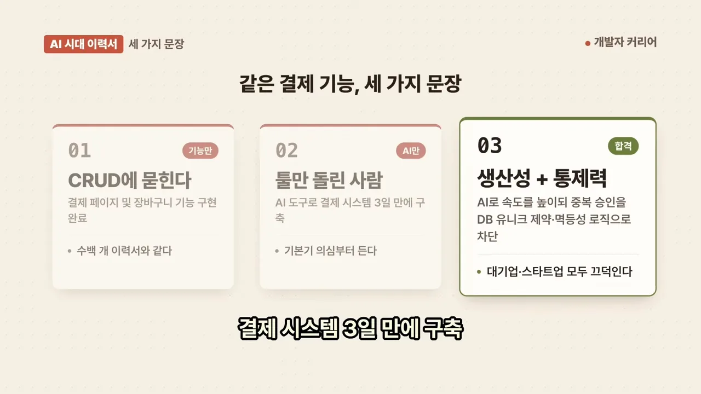
| 문장 | 채용팀 눈에는 |
|---|---|
| 결제 페이지 및 장바구니 기능 구현 완료. | 수백 개의 뻔한 CRUD(Create, Read, Update, Delete) 이력서 사이에 묻혀요 |
| AI 도구를 활용해 결제 시스템 3일 만에 구축. | 기본기 없이 툴만 돌려 봤다고 오해받아요 |
| AI로 결제 기능 구현 속도를 높이되, 버튼 연타 시 발생하는 중복 승인을 막기 위해 DB 유니크 제약 조건과 멱등성 로직을 적용함. | 생산성도 챙기고 결제 핵심 안정성도 스스로 통제하는 사람으로 보여요 |
마스터 이력서 하나에 공고마다 20% 조절
회사마다 공고와 기술이 다르니 맞춰 쓰는 건 당연히 필요해요. 다만 매번 백지에서 새로 쓰지는 말라고 해요. 모든 프로젝트와 문제 해결 과정을 담은 마스터 이력서를 하나 제대로 만들어 두고, 공고를 볼 때마다 두 가지만 바꿔요.
- 프로젝트 순서 — 그 공고가 가장 중요하게 보는 기술이나 도메인과 맞는 프로젝트를 맨 위로 올려요.
- 불릿 순서 — 같은 프로젝트 안에서도 공고에 맞는 불릿을 첫 줄로 올려요.
두 번째를 보여 주는 슬라이드 제목이 '같은 이력서, 첫 줄만 바꾼다'예요. 왼쪽 카드는 대기업 공고용 '기술적 깊이'(DB 제약 조건·동시성 제어·롤백 검증), 오른쪽 카드는 스타트업 공고용 '속도와 완결력'(1인 피처 완결·AI 도구 활용·빠른 배포)이에요.
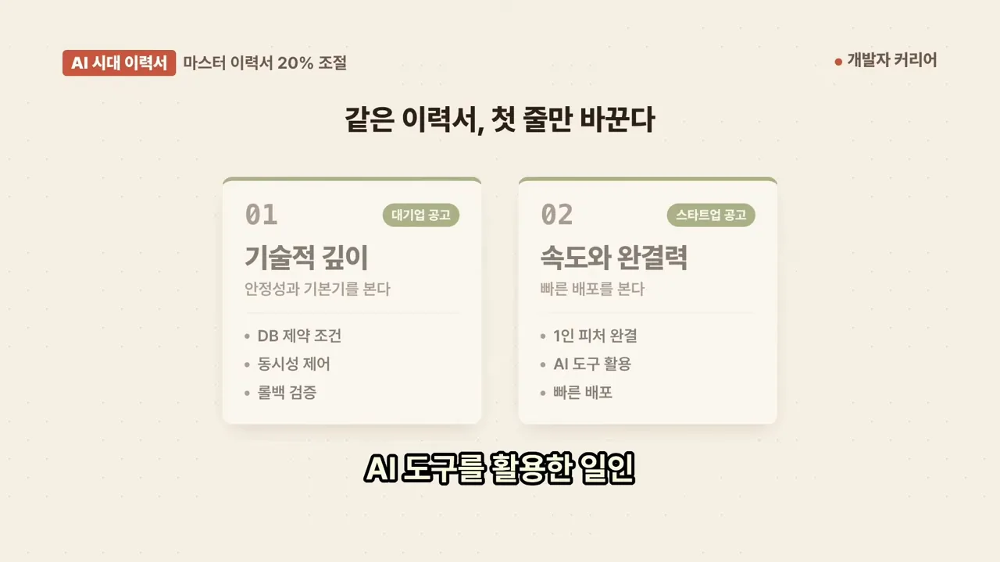
오늘 밤 지울 문장과 3단 변환 템플릿
이력서 프로젝트 칸의 '무엇을 구현함', 'AI로 개발 기간 50% 단축함' 같은 문장은 오늘 밤 지우라고 해요. 프롬프트 한 줄이면 누구나 코드를 뽑는 시대라 '무엇을 구현했다'는 말에는 변별력이 없어요. 면접관의 눈을 멈추게 하는 건 남들이 지나친 결함을 찾아 스스로 해결한 과정뿐이라는 거예요.
발표자는 CS 지식과 엔지니어링 기본기를 암기 과목이 아니라 안전망이라고 불러요. AI가 그럴듯하게 만든 코드 속에 숨은 동시성 버그, 데드락, 메모리 누수를 잡아내는 장치라는 거예요. 불릿 하나하나가 그 기본기를 증명하는 창구가 돼야 해요.
3단 변환 템플릿
지울 문장의 예는 'AI 도구를 활용해 결제 및 장바구니 기능 3일 만에 구현 완료'예요. 이 문장을 슬라이드의 세 칸 순서대로 바꿔요. 01 책임은 '중복 결제 결함을 사전에 식별', 02 판단은 '외부 솔루션 대신 DB 제약·상태 제어', 03 성과는 '동시 요청 1000건 불일치 0건'이에요.
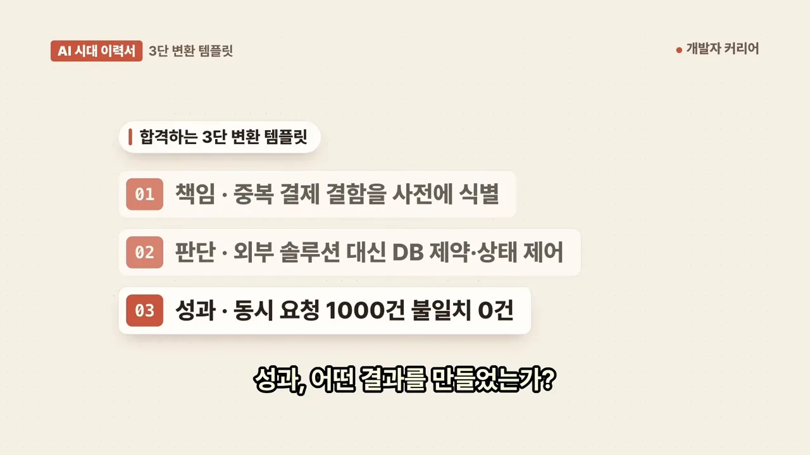
성과 칸의 숫자는 동시 요청 1,000건으로 돌린 스트레스 테스트에서 나와요. 세 칸을 이어 붙인 결과가 다음 슬라이드의 '이력서에 그대로 넣는 한 줄'이에요. 오른쪽 카드 제목이 '책임 → 판단 → 성과 한 줄'이에요.
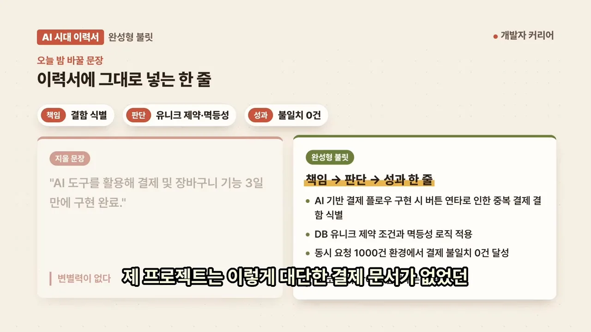
AI 기반 결제 플로우 구현 시 버튼 연타로 인한 중복 결제 결함을 식별하고 DB 유니크 제약 조건과 멱등성 로직을 적용해 동시 요청 1,000건 환경에서 결제 불일치 0건 달성.
— 영상 16:15
평범한 토이 프로젝트에서 쓸 거리 찾기
결제처럼 대단한 기능이 없는 게시판이나 투두 리스트라도 쓸 게 있다고 해요. 오른쪽 패널의 '개발자 도구 3G'와 '버튼 10번 연타'가 바로 해 볼 두 가지예요.
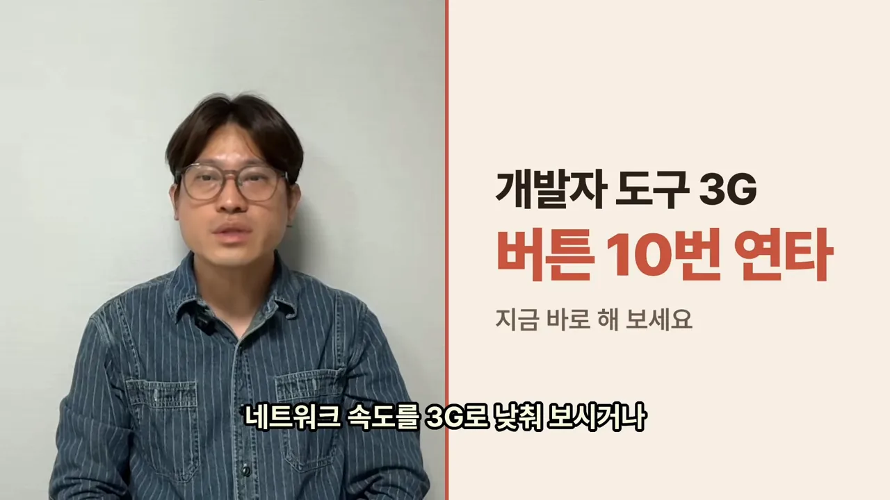
결함을 찾았으면 원리를 파악해 고치고, 증명까지 해요. 스티커의 '동시 요청 10개, 1건만 승인'이 목표 상태예요. 10개 요청을 동시에 보내는 동시성 테스트를 붙여, 한 건만 정상 승인되고 나머지는 안전하게 막히는 걸 보여 주라는 거예요.
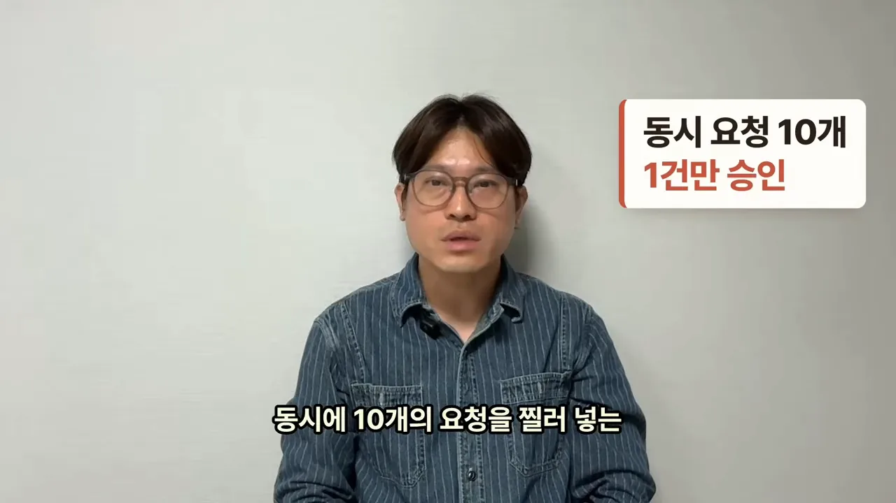
그리고 그 과정을 책임·판단·성과 템플릿으로 이력서에 적어요. 마지막 패널은 그 한 줄이 만드는 변화를 '복붙하는 지원자 → 통제하는 엔지니어'로 적고, 그 아래에 '프로덕션을 책임지는 사람'을 붙였어요.
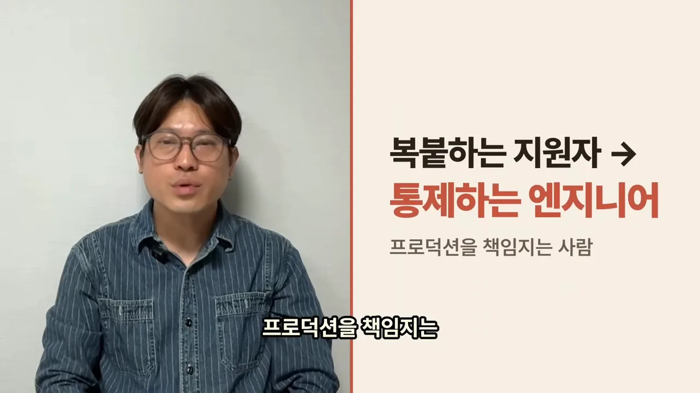